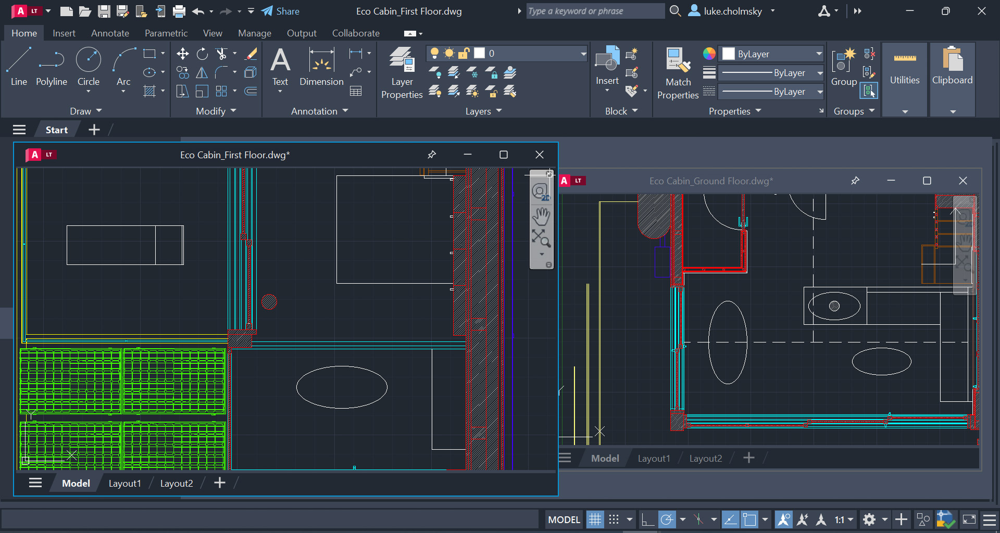

AutoCAD
1.AutoCAD - Autodesk

1982년에 출시된 AutoCAD는 여러 전문 엔지니어링, 기계, 제조 산업 및 건축 분야에서 널리 사용되고 있습니다.
현재 일반인 입장에서는 쓸 확률이 거의 0에 가까운 프로그램이지만... 건축은 아직도 CAD만 사용하는 회사가 대부분입니다.
워낙 여러 가지 업종의 사람들이 쓰는 프로그램이라 물어보면 주변에 다룰 수 있는 사람이 꽤나 있을 정도로 많은 사용자가 오랜기간동안 축적되면서 사용합니다.
프로그램이 근본적으로 Design 기반이 아닌 Drafting 기반에서 벗어나질 못하고 있어서 선이나 곡선 등을 그릴 때 한번 치수를 정하면 원하는 수치로 바꾸기가 다른 프로그램에 비해 어려운 편이었다. 특히 구속 조건을 줄 수 없어 업무 효율 및 설계 데이터 활용도 부분에서 시간과 인력 낭비가 심한 편이었다. 다만 2010부터 수평, 수직, 평행 등은 물론 치수와 관련된 조건들을 구속하는 것이 가능해져서 다른 프로그램과 마찬가지로 처음엔 대충 그리다가 나중에 치수를 구속하는 게 가능하긴 하다.
구(舊) 버전의 인기가 상당해서 일부러 2009버전이나 2014버전을 갖고 활용하는 현업이나 교육계가 꽤 된다. 극단적인 사례긴 하지만 사용하는 기능이 한정적인 회사들은 가벼움을 이유로 2020년에도 여전히 2000 버전을 사용하기도 한다. 저장을 할 때도 일부러 구 버전으로 다운그레이드해서 저장을 하는 경우가 상당히 많다. 강사들도 가르칠 때 저장을 2004 버전, 2007 버전으로 하라고 할 정도다. 시험이나 제작을 위해서 그렇게 하는데 산업 현장에서도 최신 버전을 바로 따라가지 않기 때문에, 호환을 위해서 그렇게 한다고 보면 된다
AutoCAD 2017에 추가한 8가지 새로운 기능들 중에 가장 인상깊은 기능이 있다. 바로 PDF 파일 도면들의 선들을 인식하여, DWG 파일로 변환하는 기능이다. 실제로, 테스트를 해보면 알겠지만, 큰 문제 없이 정상적으로 변환이 되는 것을 확인 할 수 있다. 이렇듯, PDF로 그려진 도면 파일들을 일일이 수작업을 통해서 DWG로 변환하는 번거로움은 사라졌다.
다른 여러 프로그램들과 파일 호환성이 좋다. 직선과 곡선, 선 두께와 모양 데이터만 내보내면 되니까 그럴 만도 하단다. 오토데스크의 3D툴인 3DS Max와 Adobe Illustrator, Rhino, FreeCAD, ArchiCAD, 레이저커터 출력 프로그램 등 다양한 프로그램과 호환이 잘 된다. 예를 들어 CAD로 제도한 것을 3DS Max에서 3D모델로 정확히 구현할 수도 있다. AutoCAD는 자체 .dwg 확장자를 사용하는데, 그것과 별개로 타 프로그램과의 데이터 교환용 파일 .dxf 포맷을 이용하면 웬만한 벡터 프로그램에서 거의 다 인식하며, 텍스트 파일로 되어 있어 LZH 등으로 압축을 하면 크기를 크게 줄일 수 있다는 장점이 있다.
이 소프트웨어는 기본적인 3D 모델링 기능을 제공하지만 BIM을 생성하지는 않으며 주로 컴퓨터 지원 설계(CAD)에 유용합니다. Autodesk가 다양한 소프트웨어 제품군을 제공하기 때문에 AutoCAD가 CAD 영역을 넘어서 발전할 가능성은 낮습니다.
대표 단축키
U (Units): 단위설정
V (View): 보기
E (Erase): 지우기
L (Line): 선
PL (Polyline): 폴리선
SPL (Spline): 스플라인
REC (Rectangle): 직사각형
MVS (Mvsetup): 도면 크기 정하기
C (Circle): 원
A (Arc): 원호
X (Explode): 객체 분해하기
O (Offset): 띄우기
TR (Trim): 자르기
EX (Extend): 선 연장하기
CHA (Chamfer): 모따기(챔퍼)
F (Fillet): 필렛(라운딩)
M (Move): 이동
CO,CP (Copy): 복사
RO (ROTATE): 회전
SC (Scale): 크기 및 비율 조정
장점
- 인터페이스: AutoCAD의 인터페이스는 쉽게 배울 수 있습니다.
- 고급 2D 설계 기능: AutoCAD는 강력한 2D 설계 기능을 제공합니다.
- 넓은 적용 범위: AutoCAD는 건축, 기계, 전기, 플랜트, 시설 관리 등 다양한 분야에서 사용될 수 있습니다. 이는 AutoCAD의 유연성을 보여주며, 다양한 산업 분야에서 그 가치를 인정받게 합니다.
단점
- 고가: AutoCAD는 그 기능과 성능에 비해 상당히 비쌉니다. 이는 특히 중소기업이나 개인 사용자에게 부담이 될 수 있습니다.
- BIM 기능 부재: AutoCAD는 기본적인 3D 모델링 기능을 제공하지만, 건축 정보 모델링 (BIM) 기능은 부재합니다.
- 학습 곡선: 비록 사용자 친화적인 인터페이스를 가지고 있지만, AutoCAD의 모든 기능을 완전히 이해하고 활용하는 데는 상당한 시간과 노력이 필요합니다.